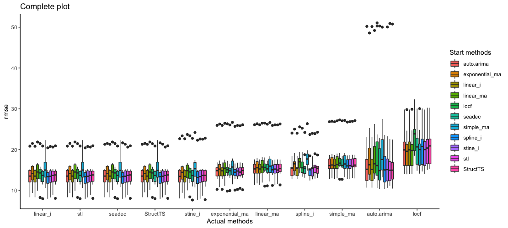

This package implements the Known Sub-Sequence Algorithm <doi: 10.1016/j.aaf.2021.12.013> which helps to automatically compare, validate and identify the best methods for missing data imputation in time series. It compares the performance of 11 state-of-the-art’s imputation methods avaliable from multiple CRAN packages and delivers a best method suited for each particular time series.
Installation
You can install the development version of kssa like so:
library(devtools)
install_github("pipeben/kssa")Usage
You can run kssa like in the following example that plots the results obtained when applying kssa to the example time series tsAirgapComplete.
# Create 20% random missing data in tsAirgapComplete time series from imputeTS
set.seed(1234)
library("kssa")
library("imputeTS")
airgap_na <- missMethods::delete_MCAR(as.data.frame(tsAirgapComplete), 0.2)
# Convert co2_na to time series object
airgap_na_ts <- ts(airgap_na, start = c(1959, 1), end = c(1997, 12), frequency = 12)
# Apply the kssa algorithm with 5 segments,
# 10 iterations, 20% of missing data, and
# compare among all available methods in the package.
# Remember that percentmd must match with
# the real percentage of missing data in the
# input co2_na_ts time series
results_kssa <- kssa(airgap_na_ts,
start_methods = "all",
actual_methods = "all",
segments = 5,
iterations = 10,
percentmd = 0.2
)
kssa_plot(results_kssa, type = "complete", metric = "rmse")
Conclusion: Since kssa_plot is ordered from lower to higher error (left to right), method ‘linear_i’ is the best to impute missing data in airgap_na_ts. Notice that method ‘locf’ is the worst
To obtain imputations with the best method, or any method of preference use function get_imputations().
Reference
You can cite kssa the following:
Ivan-Felipe Benavides, Steffen Moritz, Brayan-David Aroca-Gonzalez, Jhoana Romero, Marlon Santacruz and John-Josephraj Selvaraj (2025). kssa: Known Sub-Sequence Algorithm. R package version 0.0.2. https://github.com/pipeben/kssa